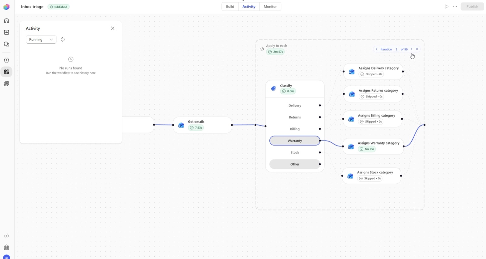
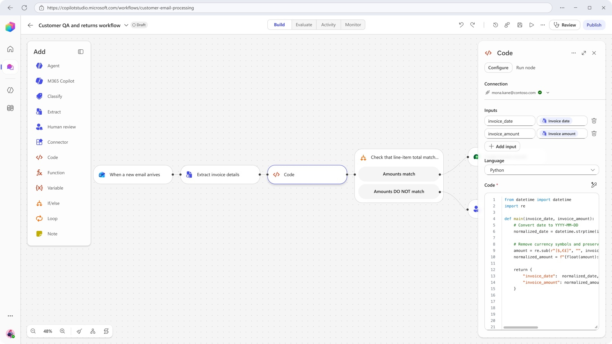
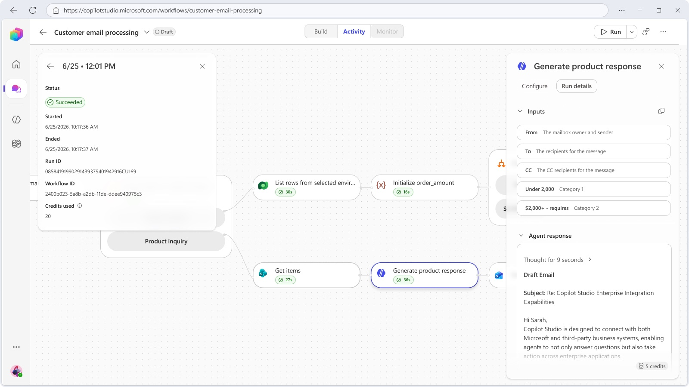
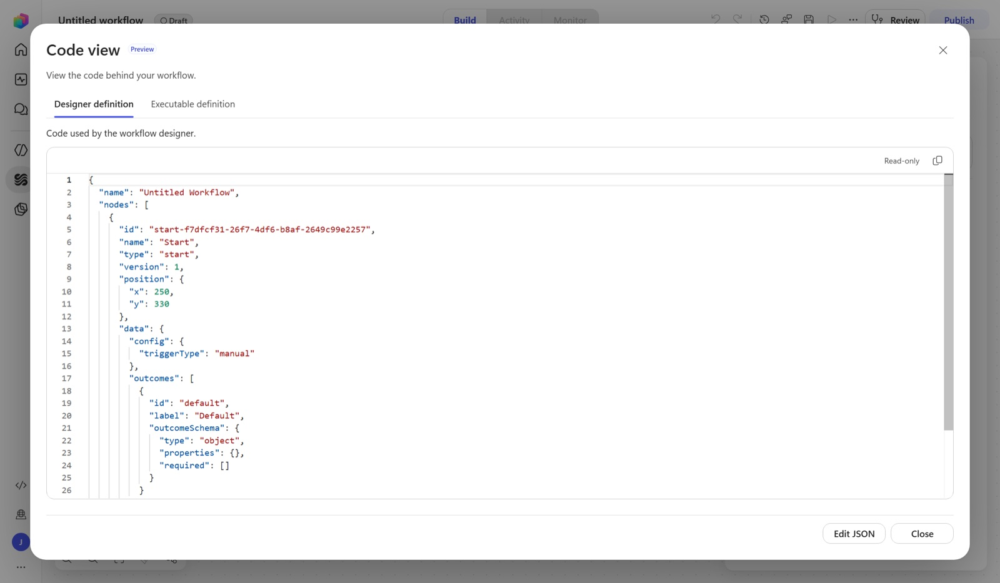

前台营收与客户体验
覆盖销售线索挖掘、商机建档、订单合同管理与客户支持分流：用智能体阅读多变邮件起草带引用的回复，再用确定性工作流记录工单并升级紧急诉求 [1][2]。
单纯把企业流程塞给大语言模型智能体，会在审批与账务环节因路径随机与成本失控而折戟；而固守纯确定性规则流，一旦遭遇版式突变的发票或带咖啡渍的机票扫描件便立刻报错停摆 [1]。在 Microsoft Ignite 2026 专场 BRK258 中，Copilot Studio 产品经理 Joe Fernandez 完整拆解了“确定性工作流锁死步骤序列 + 智能体节点注入判断力”的双向编排架构，发布 0.06 秒专用决策模型分类节点、真实文件输出、行内 Python 代码节点与逐动作额度账本，并现场搭建了千封大会邮件六路分流工作流 [1][2]。
01 / Automation Economics & Guardrails
麦肯锡全球研究院测算显示，利用当今已落地的技术即可将美国约 57% 的日常工作时长自动化；若组织围绕员工、智能体与机器人重构业务流程，到 2030 年可释放约 2.9 万亿美元经济价值 [1][2]。Joe Fernandez 在开场特别廓清了一个关键边界：自动化 57% 的工时绝不等于裁撤 57% 的岗位，而是把团队从差旅报销核验、会后纪要群发与跨系统手工录单中解脱出来 [1]。以企业最核心的销售角色为例，高德纳（Gartner）调研指出销售代表每月仅有 14% 的时间真正花在潜在客户开拓上，大量精力被繁琐的线上搜集与客户关系管理系统手工录入吞噬；智能体则能全天候满负荷（100%）接管线索初筛与建档，把面对面解决客户难题的时间还给销售 [1][2]。
规模扩张的速度同样陡峭。国际数据公司（IDC）预测到 2029 年全球活跃部署的智能体将突破 10 亿个（为 2025 年规模的 40 倍），每日执行动作高达 2,170 亿次；微软《2026 工作趋势指数》亦录得生态内智能体规模同比激增 15 倍 [2]。然而，缺乏顺序约束与成本护栏的纯智能体试点正撞上残酷的投产高墙：高德纳警告到 2027 年底将有 超过 40% 的智能体项目因算力账单失控、业务回报模糊或风控薄弱而被迫关停，并预测到 2030 年 10%–15% 的市场份额将专门用于监督其他智能体的“守护智能体” [2]。德勤同样指出，缺乏集中监控的自主代理极易在后台悄然制造难以察觉的业务差错 [2]。
下方交互导览台内嵌了 BRK258 官方点播流、高清封面、原版 46 页幻灯片直链与六大核心实录时间点，点击右侧章节即可对照查阅 [1][2]：
覆盖销售线索挖掘、商机建档、订单合同管理与客户支持分流：用智能体阅读多变邮件起草带引用的回复，再用确定性工作流记录工单并升级紧急诉求 [1][2]。
贯穿招聘筛选、新员工入职引导、采购付款、库存物料与退货逆向物流，消除跨门户重复填表与供应商邮件手工催办 [2]。
聚焦报价到回款、月末结账异动解读、SharePoint 合同条款风险评分与红线批注，在容忍版式变化的同时锁死合规归档与法务审批链路 [1][2]。
02 / Bidirectional Blending & Economics
Copilot Studio 将企业数字化转型的底座收敛为三块积木：智能体负责感知、非结构化推理与自主行动，工作流保证可重复、可审计的步骤顺序，微应用则提供超越纯文本聊天的标准化录入与数据可视化界面 [1][2][5]。聚焦到智能体与工作流的协同，纯智能体每次达成目标的路径可能随上下文动态变化——这在供应商突然更换发票模板时是优势，但在涉及资金划拨与合规留痕时却是隐患；反之，纯工作流能以零偏差执行固定步骤，可一旦上游输入稍有偏离就会直接报错中断 [1]。Copilot Studio 的解法是支持正反两个方向的自由组装 [1][2][5]：
在工作流任意位置插入智能体节点（可直接调用环境内已发布的独立智能体，也在画布内当场新建行内智能体），强制其按结构化格式返回三单匹配结论或回信正文，再交由下游确定性步骤归档或发信 [1][2]。
在智能体的工具（Tools）配置页挂载工作流；何时触发由智能体结合对话意图自主判断，但一旦触发，内部每一步数据写入、通知与审批都严格按工作流预设轨迹执行，绝不跳步跑偏 [1][2]。
在展台答疑中，客户提问率最高的问题是：既有的 Power Automate 云端流与全新的 Copilot Studio 工作流究竟该如何选型，计费又如何核算？ Joe Fernandez 给出了清晰的决策标尺与公开透明的单步定价公式 [1][2]。纯确定性自动化且团队已持有 Power Automate 席位许可时，完全可以继续沿用 Power Automate（其产品线保持长期稳健演进）；但只要业务流程需要深度混编多模态推理智能体、0.06 秒分类节点、文档抽取或计算机操作（Computer Use），并希望统一纳入 Copilot Credits 消费池核算（支持预付费额度包或绑定 Azure 订阅按量计费），就应首选 Copilot Studio 工作流 [1][2]：
| 选型维度 | Power Automate 云端流 | Copilot Studio 工作流 |
|---|---|---|
| 最佳适用场景 | 规则明确、输入高度结构化的纯确定性任务自动化 [1][2] | 端到端业务流程重构：在确定性编排主干中混编推理智能体与多模态判断 [1][2] |
| 原生 AI 能力深度 | 以轻量提示词（Prompts）文本生成为主 [2] | 完整智能体节点（最新前沿模型、多文件输入输出、工具与代码）+ 内置 Classify / Extract / Copilot / Computer Use 动作 [2] |
| 许可与计费模型 | Power Automate 席位/流程许可 + 提示词附加额度 [1][2] | 统一消费模型：非 AI 确定性动作固定 0.13 Credit/步（约 $0.0013）+ 智能体动作按模型/工具/时长计量 [1][2] |
| 开放模板生态 | 传统云端流模板库 | 全新开源 Copilot Studio Gallery（microsoft.github.io/copilot-studio-gallery），汇聚微软官方与署名社区最佳实践 [1][2][3] |
由于 1 Copilot Credit 折合 0.01 美元（1 美分），任何不调用人工智能的确定性连接器、条件判断或邮件归档动作仅花费 0.0013 美元 [1]。只有真正触发推理节点时，系统才会叠加模型档位（如轻量模型 GPT-6 Luna 与重型模型 Fable 5.2 的单价差异）、工具调用次数及运行时长消耗 [1][2]：
03 / Smarter Steps & Enterprise Scale
全面商用的新版工作流设计器不仅支持自由拖拽画布、水平与垂直布局一键切换、行内协作便签，更引入了极其关键的单节点就地测试（Node Testing）——创作者修改某一步智能体指令或分类条件后，无需每次从头触发整条端到端长流程，直接在当前节点内点击运行即可秒级校验输出（例如测试邮件分类节点在 1.4 秒 内返回 Billing 类别与 96% 置信度）[1][2]。在此基础上，BRK258 揭晓了围绕更聪明步骤（Smarter Steps）、**规模化投产（Ready to Scale）与极速构建（Faster to Build）**铺开的 15 项重磅能力更新 [1][2]：
传统大语言模型就像“散文作家”，每次做简单二选一或路由分拣都要从头自回归生成词元，既慢又贵；而微软在本届大会发布的 Microsoft-Decision-1.1 专用小模型更像经验老到的“急诊分诊护士”，专攻文本或图像的多路分类与打分 [1][2]。将其接入工作流 Classify 节点（现已正式商用推送）后，单条数据分类耗时骤降至 0.06 秒，中位延迟比传统大模型快约 35 倍、成本降低 200 倍，且原生输出校准后的置信度分数（便于配置“低于 85% 置信度自动转人工”护栏）[1][2]。与此同时，Extract 节点支持拖入任意样本文件自动生成 PDF、Word、Excel 与演示文稿的结构化抽取指令；Agent 节点新增真实文件输出（Files as output，正式商用推送），可直接吐出生成的 .xlsx 报表、.pdf 证书或 .pptx 简报传给下游连接器；Copilot 节点打通了对话（Chat）、协同画布（Cowork）与前沿预览的自主领航（Autopilot）三种委派模式；而开启公测的 Code 节点则允许直接在画布内嵌入 Python 脚本（支持自然语言生成代码）完成正则清洗、日期标准化与复杂金额核对，彻底告别以往为了几行数据转换而专门额外部署云端函数的繁琐链路 [1][2]。
过去几个月企业客户呼声最高的需求是算力账单透明化。现已正式商用的额度透视（Credit Visibility）在运行历史（Activity）面板中精确展示每一次运行及每一个具体步骤消耗的点数（例如同屏清晰列出整条流程总耗 20 Credits，其中产品回复智能体耗时 36 秒、思考 9 秒并消耗 5 Credits），并在监控（Monitor）面板中聚合选定时间窗的总趋势与错误明细 [1][2]。为消除“员工休假或离职导致生产工作流断档”的治理顽疾，将于 12 月上线的服务主体与连接管理允许将工作流所有权移交给企业服务账号（Service Principal），且当工作流作为智能体工具被调用时，支持逐个动作精细指定使用终端用户凭据还是创建者凭据执行 [1][2]。此外，解决方案环境变量支持已正式商用（在任意输入框键入 / 即可插入令牌，跨开发、测试、生产环境晋升无需手工改图），配合公测上线的 Code View（JSON 源码视图），开发者可随时检视或复制底层节点定义交由编码智能体批量重构 [1][2]。
除了在浏览器画布里手工编排，团队现在拥有两条自然语言极速通道：其一是正式商用的 Copilot Studio MCP 服务（执行 npx -y @microsoft/copilot-studio-mcp@latest 即可接入 VS Code、GitHub Copilot、Codex 或 Claude Code），一句指令即可自动检索连接器、草拟五步大额发票审核流并在 14 秒 内跑通测试 [1][2][4]；其二是前沿预览的 Copilot Cowork 构建技能，自动读取组织实时邮件与团队审批规范，同步生成配套的审核智能体与工作流草稿 [1][2][5]。画布本身也迎来了游戏级交互式新手导览（Guided Tour，正式商用）、框选多节点平移、鸟瞰小地图（Minimap）、缩放预设（Shift+1 适配全屏）、拖拽互换节点自动重连线以及 12 月上线的可视化版本历史差异对比 [1][2]。在演讲第 26 分钟的现场实时扫码投票（hum.vote/4VBY）中，全场线下与线上观众票选出的最受期待特性前三名依次为：第一名 Copilot Studio MCP 服务、第二名 Copilot Cowork 自然语言构建、第三名搭载决策模型的 Classify 节点 [1]。
下方四宫格精选自 BRK258 官方原版幻灯片，直观定格了 0.06 秒分类节点、行内 Python 代码节点、逐动作额度回放与 JSON 源码定义四大工程界面 [2]：

在收件箱循环批处理中，Classify 节点仅耗 0.06 秒即锁定保修（Warranty）分支，未命中的配送、退货、账单与库存分支全部 0 秒跳过 [2]。

紧接发票抽取节点之后直接编写 Python 函数标准化日期与多币种金额符号，再交由条件分支比对明细总额 [1][2]。

左侧运行摘要清晰标注整趟耗时与总消耗（20 Credits），右侧点选智能体节点即可检视 9 秒思考过程与该步独立花费（5 Credits）[1][2]。

提供设计器定义与可执行定义双标签页，支持一键复制或直接编辑节点坐标、触发器配置与输出结构契约，方便交由外部编码智能体做版本比对与批量重构 [1][2][4]。
04 / Live Demo Anatomy
在专场后半段的 13 分钟实机演示（00:28:15–00:41:03）中，Joe Fernandez 以真实世界的高并发难题切入：当数千名参会者向 Ignite 官方咨询共享邮箱涌入议程排期、团体购票、参会证明开具、讲者差旅机票报销、企业赞助洽谈以及垃圾推销等五花八门的邮件时，小团队如何用一条工作流串联多种形态的智能节点与确定性连接器完成全自动接管 [1]？整套方案完美示范了“按每条分支的不确定性复杂度精准匹配最轻算力”的工程铁律 [1]：
以共享邮箱收到新邮件为触发器，先用自然语言定义六大类别并在节点内粘贴一封赞助商洽谈邮件就地测试：选用轻量生成模型 GPT-6 Luna 时需等待数秒才吐出 Sponsorship；切回默认 Decision 模型后几乎瞬间返回结果并附带置信度分数，支持设置 < 85% 置信度自动转人工复核 [1]。
调用环境内已构建并同时服务于聊天渠道的独立议程智能体（Agenda Agent）；为避免智能体寒暄啰嗦，在工作流节点输出契约中强制声明“仅返回干净的 HTML 邮件回复正文”，直接传给下游确定性回信动作 [1]。
无需跳出工作流界面，直接在画布内一键展开全屏设计器创建行内票务智能体，挂载 Dataverse MCP 查询参会注册表；一旦识别出需人工核准的特殊退改签，下游立即命中 **Human review（人工审核）**步骤挂起整条工作流，通过邮件或聊天推送完整上下文等待批准或驳回后再继续发信 [1]。
针对参会者回公司报销所需的旧金山现场参会证明，专职智能体核验数据库签到记录后，利用新增的 Files as output 能力直接排版生成带微软与 Ignite 视觉标识的 .pdf 证书文件（亦可声明 .pptx 或 .csv），随后由确定性步骤存入文档库并作为邮件附件发出 [1]。
面对扫描模糊且沾有咖啡渍的讲者报销机票，现场直接将样本图片拖入 Extract 节点；系统在后台数秒内自动推导生成包含航空公司、乘机人姓名及航段明细列表的通用字段描述与抽取指令，后续任意版式的机票均可直接结构化入账 [1]。
复杂的赞助商排期与会议简报撰写通过 Copilot 节点一键委派给 Cowork（刷新协同画布即可实时接管触发出的会话）；而垃圾邮件与杂项则直接走纯确定性删除/归档动作，不烧一颗大模型词元 [1]。最后打开运行历史（Activity）实测对账：调用推理的复合智能动作消耗 7.29 Credits，而所有非 AI 确定性步骤恒定仅需 0.13 Credit [1]！
05 / References: Official Primary Sources & Engineering Guides
884ed343-acbc-4e75-b5d0-4dc057f66e78）